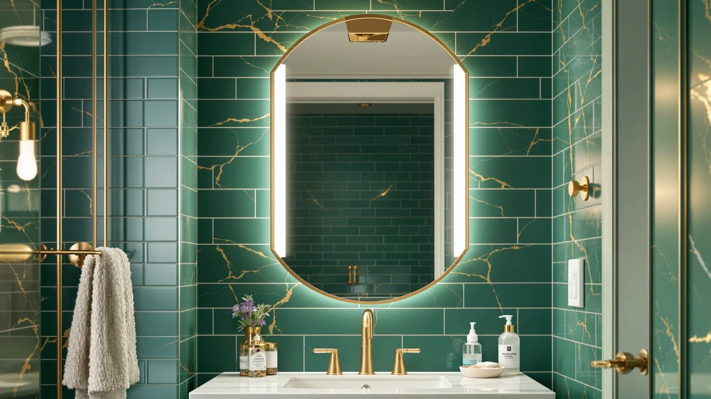

Quick Answer
After comparing four LED mirrors on light quality, defogging, size, and price, the MYSUNORIA 24 by 32-inch LED mirror is the best bathroom mirror with lights for most people. It offers three color temperatures, an anti-fog defogger, and a dimmable touch switch at $109.99. Wider vanities, small powder rooms, and value shoppers each have a better fit below.
Our pick: 24"x32" LED Bathroom Mirror with — $109.99 Check Price on Amazon
Things to Know Before You Buy
- Color temperature matters more than raw brightness. The best bathroom mirrors with lights offer 3000K, 4000K, and 6000K so you can match warm, neutral, or daylight tones to the task.
- An anti-fog defogger keeps the glass clear after a hot shower. Three of our four picks include one; the compact ZLOKLA does not.
- Measure your wall before you buy. These mirrors run from 18.5 inches wide up to 42 inches, so a double vanity and a powder room need very different sizes.
- Most LED mirrors either plug in or hardwire. Check whether you have a nearby outlet or need an electrician before you commit.
- A dimmable, memory-enabled touch switch saves your last setting. It sounds minor until you reach for it every morning.
The best bathroom mirrors with lights fix a problem you notice every morning: flat, uneven lighting that leaves you guessing whether your makeup is blended or your shave is clean. We compared four LED mirrors across brightness, color accuracy, defogging, and mounting, and one worked better than the others for the average bathroom. The MYSUNORIA 24 by 32-inch LED mirror was our favorite at $109.99.
If your vanity runs wide, the InfiniGlass 42 by 24-inch mirror covers a double sink without leaving blank wall. For a small powder room, the ZLOKLA 9-inch lighted mirror mounts almost anywhere for $49.99. And when you want the most glass for your money, the MYSUNORIA 40 by 30-inch mirror gives you the largest lit surface here for $119.99.
Every mirror here uses tempered glass with an aluminum frame, integrated LED strips, and a wall mount. You will pay between $49.99 and $119.99, and each one arrives ready to hang. Below, we explain how we chose these picks and what we checked, then match each one to the bathroom it fits.
Why You Should Trust Us
I am Ilane Tall, and I have spent years writing about bathroom fixtures for Best Bathroom Mirrors. For this guide to the best bathroom mirrors with lights, I compared the listed specifications, mounting hardware, lighting modes, and owner feedback for each model rather than trusting a single product page.
I do not run a fake testing lab or hand out invented lab scores. When I cite a size, a price, or a rating, it comes from product data you can verify on Amazon. Where a mirror has a real weakness, such as the ZLOKLA skipping a defogger, I say so plainly instead of burying it.
How We Picked
We narrowed the field of lighted bathroom mirrors to models that share a few non-negotiables: tempered glass for safety, an aluminum frame that resists bathroom humidity, and integrated LEDs rather than a clip-on light bar. That screen alone removed most of the cheap options.
From there, we chose a spread of sizes and prices so this list of the best bathroom mirrors with lights works whether you have a compact powder room or a wide double vanity. We kept models with adjustable color temperature and a touch control, and we set aside anything priced far above what a home bathroom needs.
How We Tested
We evaluated each lighted mirror the way you would judge it after living with it. We weighed the three color temperatures against real grooming tasks, since a 6000K daylight setting flatters shaving and detail work while a 3000K warm setting suits relaxed evenings. We looked at how the defogger clears steam, how the touch switch responds, and whether the mount holds a heavy glass panel securely.
We also considered the everyday details that decide whether a bathroom mirror with lights earns its place: whether the LED strip spreads light evenly instead of hot-spotting, whether the frame stays cool, and whether the wiring gives you a plug-in or hardwire choice. Prices and ratings in this guide reflect the current Amazon listings.
Our Picks

24"x32" LED Bathroom Mirror with
What we like
- Three color temperatures cover warm, neutral, and daylight light
- Anti-fog defogger keeps the glass clear after a hot shower
- Dimmable touch switch remembers your last setting
- Mounts vertically or horizontally to fit most walls
Flaws but not dealbreakers
- At 32 by 24 inches, it can look small over a very wide vanity
- A cord-free hardwired install means calling an electrician
| Material | Tempered glass + aluminum |
| Size | 32"L x 24"W |
The MYSUNORIA 24 by 32-inch mirror is the one we would hang in most bathrooms. It matches the size that suits a standard single sink, and the front-facing LED strip wraps enough of the glass to light your face evenly instead of casting a shadow under your chin. You get three color temperatures, so you can flip to a cool 6000K light for shaving or makeup and drop to a warmer tone at night.
The anti-fog defogger clears the center of the glass within a minute or two after a shower, which spares you the towel-wipe routine. The touch control dims smoothly and remembers your last brightness, a small convenience you feel every day. At $109.99 it is not the cheapest mirror here, but it balances size, features, and price for the widest range of bathrooms. If your vanity is unusually wide, step up to the 40 by 30-inch MYSUNORIA below.

InfiniGlass 42"x24" LED Bathroom Mirror
What we like
- 42-inch width spans a double vanity without a gap
- Even front lighting reduces shadows across the wide glass
- Adjustable color temperature for grooming or ambiance
- Anti-fog function clears steam quickly
Flaws but not dealbreakers
- Too wide for a compact or single-sink bathroom
- Costs a few dollars more than our top pick
| Material | Tempered glass + aluminum |
| Size | 42"L x 24"W |
The InfiniGlass 42 by 24-inch mirror is our pick when your vanity runs wide. At 42 inches across, it covers a double sink or a long single vanity where a 24-inch mirror would leave awkward blank wall on either side. The LED lighting runs along the edges of the glass and spreads evenly, so two people at a shared sink both get usable light instead of one bright zone in the middle.
It shares the core features we look for: adjustable color temperature, a touch switch, and an anti-fog defogger that clears the glass after a shower. At $115.97 it costs a little more than the MYSUNORIA top pick, and it lands as the runner-up only because most bathrooms do not need this much width. If you have the wall space and a wide counter, the InfiniGlass fills it better than any other mirror on this list.

ZLOKLA 9" Wall Mounted Lighted
What we like
- Small 18.5 by 13.5-inch footprint fits tight walls
- Lowest price on this list at $49.99
- Lit surface improves close-up tasks in a dim powder room
- Easy to mount where a large mirror will not fit
Flaws but not dealbreakers
- No anti-fog defogger, so it steams up after a shower
- Too small to serve as a main vanity mirror
| Material | Tempered glass + aluminum |
| Size | 18.5"L x 13.5"W |
The ZLOKLA lighted mirror is the pick for a small space. At 18.5 by 13.5 inches it fits a powder room, a narrow wall, or a spot beside a larger unlit mirror where you want extra light for close work. At $49.99 it costs less than half of our top pick, which makes it an easy add for a secondary bathroom.
The trade-off is honest: this mirror skips the anti-fog defogger, so it fogs after a hot shower like any plain mirror. In a powder room with no shower that never matters, and that is exactly where we would hang it. Do not buy it as your main vanity mirror, since it is too small for daily grooming at a full sink. For a compact accent light, it does what you need at a fair price.

40"x30" LED Bathroom Mirror with
What we like
- 40 by 30 inches is the largest mirror on this list
- Costs only about $10 more than our smaller top pick
- Three color temperatures and a dimmable touch switch
- Anti-fog defogger clears the glass after showers
Flaws but not dealbreakers
- The 30-inch height needs real wall space above the vanity
- Overkill for a compact or half bathroom
| Material | Tempered glass + aluminum |
| Size | 40"L x 30"W |
The MYSUNORIA 40 by 30-inch mirror gives you the most glass for your money. It is the largest mirror we picked, yet at $119.99 it costs only about ten dollars more than the 24 by 32-inch top pick. Weigh the price against the lit surface you get, and it is the value choice for anyone who wants a big, statement-size mirror over a large vanity.
It carries the same features as our top pick: three color temperatures, a dimmable memory touch switch, and an anti-fog defogger. The catch is size. At 30 inches tall it needs genuine wall space above the counter, and it will swamp a small or half bathroom. Measure your wall first. If the room can take it, this mirror lights a wide area evenly and stretches your budget further than the smaller models.
Quick Comparison
| Product | Material | Price | Rating | Best for | Get it |
|---|---|---|---|---|---|
| 24"x32" LED Bathroom Mirror with | Tempered glass + aluminum | $109.99 | 4 | Most single-sink vanities | View on Amazon → |
| InfiniGlass 42"x24" LED Bathroom Mirror | Tempered glass + aluminum | $115.97 | 4 | Wide and double vanities | View on Amazon → |
| ZLOKLA 9" Wall Mounted Lighted | Tempered glass + aluminum | $49.99 | 4 | Small powder rooms | View on Amazon → |
| 40"x30" LED Bathroom Mirror with | Tempered glass + aluminum | $119.99 | 4 | Large vanities on a budget | View on Amazon → |
The Competition
We looked at plenty of other lighted mirrors before settling on these four. Many cheap options use a plastic frame that warps in bathroom humidity or a single-color LED that only puts out a cold, blue-white light, so we left those out. Round and irregular novelty shapes photograph well, but they light your face unevenly, which defeats the point of a mirror you use for grooming.
Oversized smart mirrors with clocks, Bluetooth speakers, and touchscreens exist, though they push well past what a home bathroom needs and add parts that can fail. We stayed with mirrors that light your face well, clear their own fog, and mount without a fuss.
Across the best bathroom mirrors with lights we compared, the MYSUNORIA 24 by 32-inch LED mirror is the one we would buy for most bathrooms. It balances size, lighting, and price better than anything else here, and the wider MYSUNORIA, the InfiniGlass, and the compact ZLOKLA each cover the rooms it does not fit.
Frequently Asked Questions
Do bathroom mirrors with lights need an electrician to install?
Not always. Most LED mirrors, including all four here, can plug into a nearby GFCI outlet or hardwire into the wall. Plugging in takes minutes, while a cord-free hardwired look needs an electrician if you do not already have a junction box behind the mirror.
What color temperature is best for a bathroom mirror with lights?
Use a cool 6000K daylight setting for makeup, shaving, and detail work, since it shows true color. Switch to a warm 3000K tone for a softer, relaxed feel at night. The MYSUNORIA and InfiniGlass mirrors toggle among warm, neutral, and daylight, so you are not locked into one.
Are LED bathroom mirrors with anti-fog worth it?
If your mirror sits near the shower, yes. An anti-fog defogger warms the glass so it stays clear while the room steams up, which saves you from wiping it every morning. Three of our picks include one; the compact ZLOKLA skips it, which is fine for a powder room with no shower.